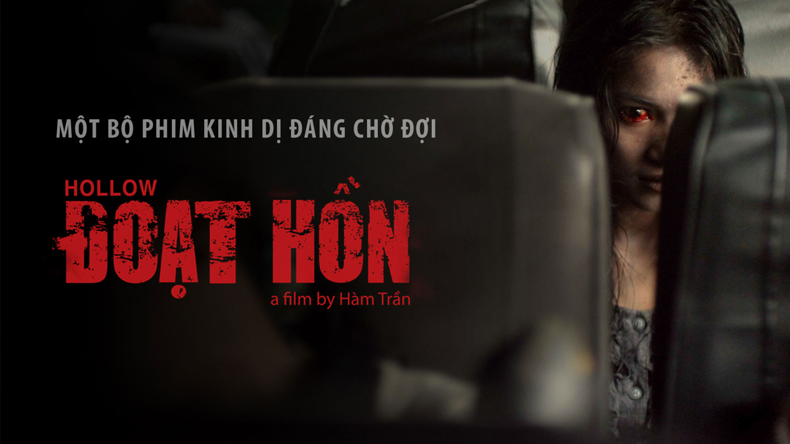

Đạo Diễn: Nguyễn Thành Nam
Diễn Viên: Huỳnh Đông, Ốc Thanh Vân, Trần Phong, La Thành, Xuân Nghị, Lê Lộc…
Thể Loại: Kinh Dị
Ngày Khởi Chiếu:01/09/2022
Thời Lượng Phim: 93 phút
Bố Già
Lượt Xem: 1.062.006
Đoạt Hồn
Lượt Xem: 18.062.006
Mắt Biếc
Lượt Xem: 21.012.002
Hai Phượng
Lượt Xem: 16.082.021
Lưu Ý: Phim Có Chứa Nôi Dung Bạo Lực Vui Lòng Cân Nhắc Kĩ Trước Khi Xem. Nghiêm Cấm Những Người Yếu Tim Và Mắc Các Bệnh Về Tim Mạch Và Tâm Lý Không Ổn Định. Mọi Thứ Trong Phim Đều Là Giả Được Thực Hiện Bởi Những Người Chuyên Gia Có Kinh Nghiệm Và Không Bắt Chước Theo Với Mọi Hình Thức.
Phim nói về hành trình của một nhóm người cùng nhau sinh
tồn và cố gắng thoát khỏi sự truy đuổi của xác sống để đến
chuyến phà cuối cùng tại một cù lao trên vùng hạ lưu sông
Mekong khi đại dịch xác sống bùng nổ. Công - một thầy thuốc
đông y nhưng đã mất đi niềm tin vào tình người, quyết định
đưa cha mình và con gái tìm đường rời đi. Trong quá trình
chạy trốn, họ thất lạc nhau, Công hoang mang đi tìm đứa con
gái rồi vô tình gặp được một gia đình hiền lành, hai chàng
trai ma lanh, đôi bạn trẻ lương thiện và một người đàn ông
có trái tim dũng cảm. Họ cùng nhau hợp sức thành một nhóm
chống trả để giành giật sự sống. Đúng lúc này, sự tị hiềm,
tham lam, ích kỷ của lòng người nảy sinh và lại đẩy họ vào
những thử thách sống còn. Liệu hành trình của nhóm người
này sẽ đi về đâu khi đại dịch càng ngày càng lan rộng?